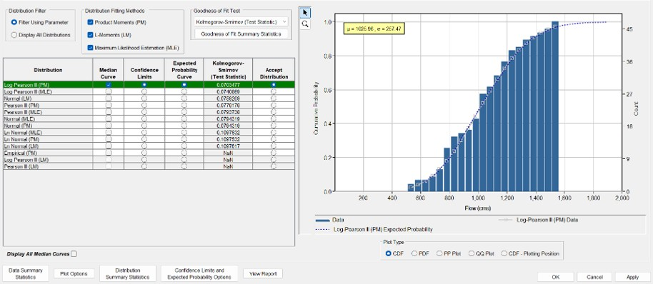
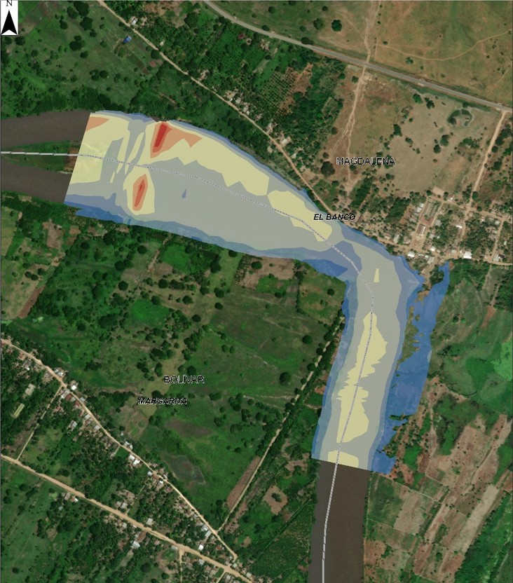
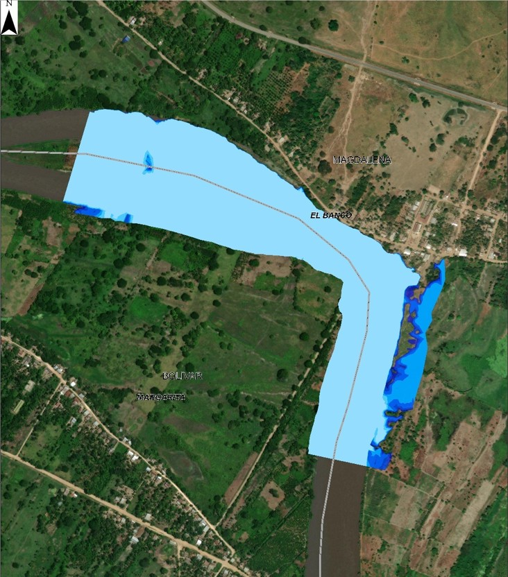
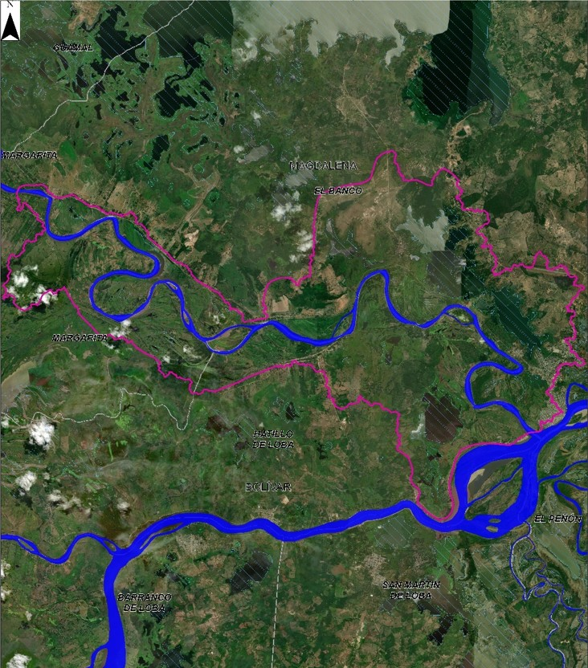
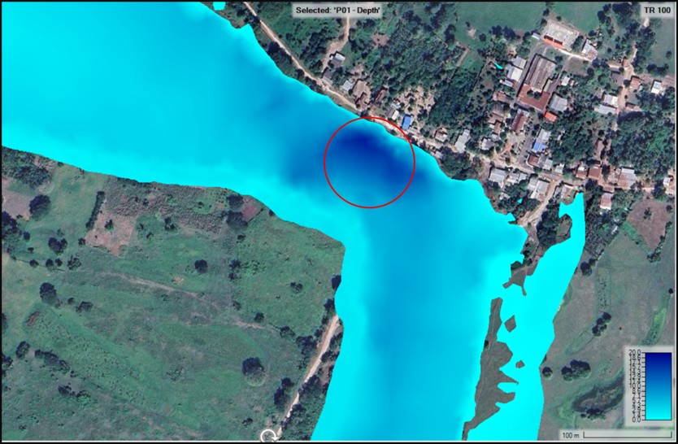
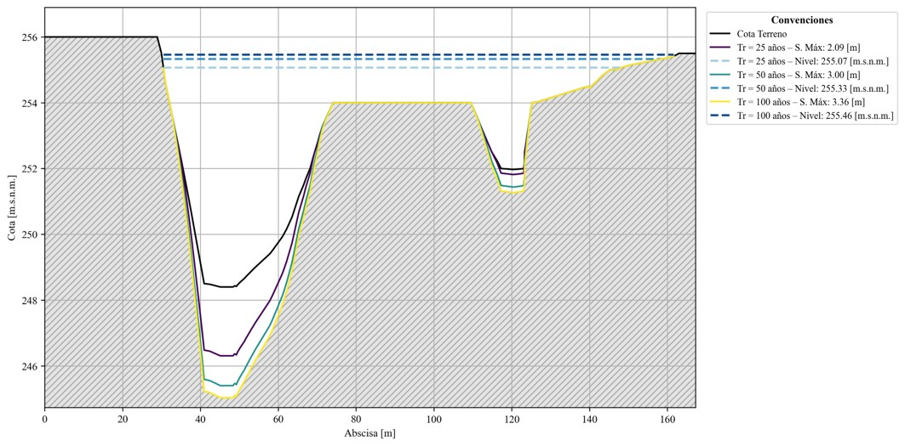
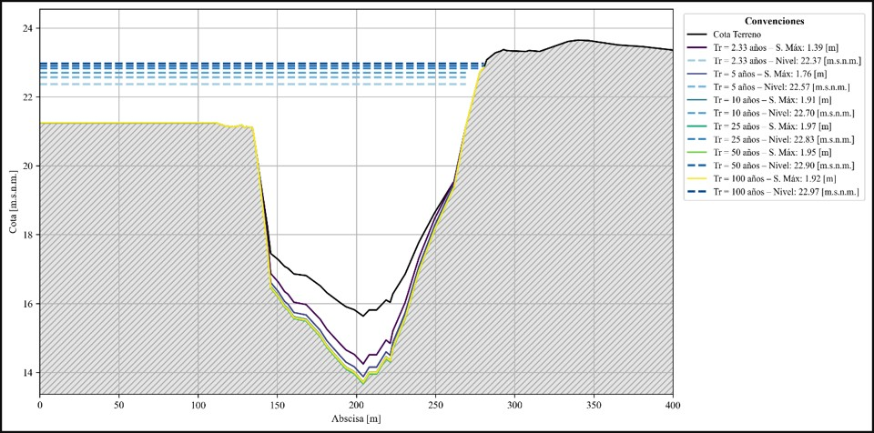

Hydrology · Hydraulics · Scour
Integrated river hydraulics and scour assessment
A complete hydrological, hydraulic and scour workflow developed for a site affected by a mass-movement event along a major river.
End-to-end analysis, modelling, mapping and technical reporting
Frequency analysis, design-flow estimation, 1D/2D simulation, cross-section and scour assessment
HEC-SSP, HEC-RAS, GIS and scientific plotting
Technical scope
The study generated design discharges for multiple return periods, evaluated water-surface levels, depths, velocities and inundation patterns, and used hydraulic results to estimate potential scour across selected sections. Interpretation focused on critical zones and the engineering implications of flow concentration.








Professional note
Project-specific names, client information and identifying map panels were omitted or cropped. The images are presented solely as evidence of technical capability; they do not constitute official deliverables or authorization to reuse project data.